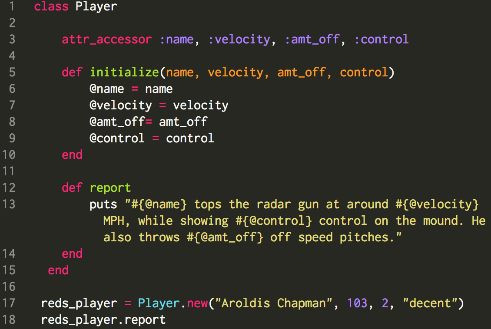

Last week in my blog post, I touched on instance variables for naming and storing information as if it were being used by a Major League Scout. In this week’s blog I wanted to touch on other variables you will come across in Ruby. Ruby variables are referenced in many different locations in a program and the range in which a variable can be referenced is called its “scope.”
Here is a look at the different variables in Ruby. Think of this blog as a quick guide to variables.
Instance variables
Instance variables are valid for a single instance of a class and start with @. As an example: @instance_variable. Uninitialized instance variables have the value nil. Instance variables are used when you want instances of a class to have different values for a certain variable.

Class variables
Class variables are valid for all instances of the class they are defined within and unlike Instance variables, Class Variables start with (two)@@. As an example: @@class_variable. Class variables must be initialized before they can be used in a method and referencing an initialized class variable will produce an error. Class variables are used when you want many instances of a class to share a certain value.
Global variables
Global variables can be accessed anywhere and start with $. As an example: $global_value. Uninitialized global variables have the value nil. Using global variables is generally avoided, for they can easily lead to errors and should only be used when there is a good reason.
Constants
Constants can be accessed from inside a class if it has been defined inside a class, otherwise they can be accessed globally. A constant begins with an uppercase letter and is mostly written in all caps. for example: CONSTANTS. Constants must be initialized with a value and making a change to an already initialized constant will produce a warning. Constants are used for values that will not change in the program.
Local variables
Local variables are only valid within a local area of code, such as a method or class. Local variables have no sigil and begin with a lowercase letter or underscore, for example: local_variable. An uninitialized local variable is treated as a call to a method with no arguments.